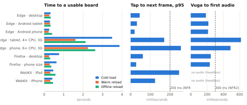

Vuga is an offline Kinyarwanda picture-to-speech (AAC) app for children with disabilities who cannot speak or are hard to understand. A child taps photographs to build a message, which the tablet speaks in Kinyarwanda, and an on-device language model suggests the next word. A caregiver sets up each child's board behind a PIN tied to their mobile number. An optional FastAPI server keeps caregiver accounts, confirmed by a code texted to that number, backs up each device's set-up, and synchronises completed messages when an adult asks. The planned evaluation is a preliminary study with adults (teachers, therapists and caregivers), not children. This report compares the final build with the proposal (revised on 23 October after supervisor feedback), then explains the implementation, its code quality and algorithms, and how it was tested.
| Planned feature (proposal) | Intended purpose | Status | Evidence |
|---|---|---|---|
| FR4 Category board, navigation, correction | Compose a message by tapping stable picture tiles | Completed | app/src/board/; browser checks 8–11 |
| FR5 Speech in Kinyarwanda, offline | The tablet speaks for the child | Completed | 188 bundled clips + caregiver recordings, now said as a sentence (Ndashaka amazi) with 1,259 generated word clips; grammar/, speech/. Synthetic and rule-based; native-speaker review pending |
| FR6 Three suggestions within the enabled vocabulary | Fewer taps per message | Completed | On-device KN trigram, parity with Python on 119 prefixes; check 8 |
| Core vocabulary of 300–500 symbols with 600–1,000 human recordings | Words and voices fitted to Rwandan settings | Reduced (planned cut) | 188 words with synthetic speech plus caregiver recordings: the first cut named in the revised proposal (1.5) |
| Vocabulary validation with adults (RQ1) | Check that pictures and words are clear and suitable | Ready, not run | Review screen in Amashusho (2 browser checks); analyse_vocabulary_review.py drafts decision-log rows by a fixed majority rule (13 tests) |
| Personal re-ranker (proposal Fig. 5) | Adapt suggestions to one child's use | Completed (final) | PersonalReranker.js = vuga_ml/models/reranker.py to 1e-9; final-features check 9 |
| FR2 Pseudonymous profiles and vocabulary | One board per child, no names | Completed | Abana/Amashusho tabs, /profiles API; checks 5–7 |
| FR3 Custom symbol with image and recorded label | Words from the child's own life (family, home) | Completed (final) | Amagambo mashya tab, storage/custom-symbols.js; final-features checks 1–5 |
| NFR3 Board configurable from 4 to 40 cells; 2 cm targets | Fit motor and visual abilities | Completed (final) | Fixed pages 4–40 with stable positions; tiles ≥ 76 px on a phone; checks 6–8 |
| Child mode (added after the design review) | Young or early communicators use a few pictures with no navigation | Completed (final) | Caregiver-chosen board (presets or up to 12 pictures), tap-to-speak, Shakisha finding game with stars and caregiver progress; app/src/child/; 9 browser checks |
| FR7 Draft-first action log, sync on adult request | Trustworthy tap counts, data stays local by default | Completed | MessageSession, SyncService; unit + API + load tests |
| FR8 Summary: selections vs all-action taps per mode | Caregiver sees use without scoring the child | Completed | Incamake tab, /profiles/{id}/summary |
| FR1 Adult accounts with roles | Protect synchronised data | Completed (final) | Mobile number confirmed by SMS (Africa's Talking); one PIN for device and account (bcrypt, 15-min lock after 5 wrong); JWT, require_role; 35 API tests, 4 browser checks |
| NFR1 Offline-first; NFR4 privacy | Rural schools, children's data | Completed | Service worker; offline in 9/9 configurations; PBKDF2 PIN; messages with custom words stay on the device; backup only for linked devices |
| Model benchmark: unigram, KN, GRU, transformer | Choose the deployed predictor on evidence | Completed | Notebook: validation top-3 21.96 / 45.78 / 46.92%. AfriBERTa tied the trigram on split v2 (48.0% each) at 338 MB |
| NFR2 Prediction < 200 ms, audio < 300 ms | Responsive on low-end tablets | Partly met | Prediction p95 ≤ 4.4 ms everywhere; audio 78–95 ms on normal profiles, 479–778 ms under 4–6× CPU emulation, where tap p95 reaches 481 ms |
| FR10 Retrain and publish model versions | Improve the model from consented logs | Partial | Reproducible pipeline (run_pipeline.py) and ModelRegistry; no administrator UI |
| NFR5 English as secondary interface language | Reach non-Kinyarwanda adults | Not implemented | Dropped after the design review: a single Kinyarwanda interface avoids mixed-language speech for the child |
| FR9 Talker device; 3D-printed keyguard | Low-cost dedicated hardware (secondary) | Not built | Firmware skeleton and SCAD model only; both need the study tablet, which is not yet chosen |
| Adult acceptance study (n ≥ 20, SUS), test-set evaluation | Measure tap reduction and usability | Not yet run | Requires ethics approval and a confirmed partner site; the test split stays sealed until then |
Justification of changes. The final iteration closed the three software features still open in the proposal (FR3, NFR3 and the personal re-ranker) and added a caregiver-managed child mode requested during design review, all inside the app; child mode is a per-child option, so the adult study still tests the full board. The fine-tuned transformer only tied the trigram (48.0% top-3 on split v2) and is 338 MB, too large for a low-cost tablet. The GRU gained 1.1 points over a trigram that is about 100 KB and suggests in 0.09 ms, so the trigram is deployed. Hardware and the study depend on external approvals, so they were deferred instead of being simulated with invented data. After the supervisor noted that six to eight interviews cannot establish children's needs, research question 1 was narrowed to validating the vocabulary, and the software now supports that review. After review of the final build, accounts now confirm the caregiver's mobile number by SMS and use one PIN for the device and the account, and, at the supervisor's suggestion, the section tabs and suggestions are on by default.
/docsFront end and back end. The board needs no server: the predictor artefact, 188 photos, 188 word clips and 1,259 sentence clips are precached by the service worker, so the app works offline after the first visit. Accounts open with a Rwandan mobile number and a six-digit code texted through Africa's Talking (stored as an HMAC digest, valid 10 minutes); the same PIN unlocks the device offline, signs in to the account and brings the backed-up set-up to a new device. When an adult asks on the Ohereza tab, server/sync.js asks the API which profiles the account owns and uploads only those profiles' completed messages, in batches of up to 1,000 with every tap event. SyncService validates the whole batch before writing, counts identical re-sends as duplicates and rejects reused IDs (409). /predict serves the same trigram for clients without a runtime.
Data handling. Every task action (select, navigate, page turn, correct, speak) is one event, logged after a draft message row exists, so taps per message include Vuga. Messages that use a custom word are marked device-only (synced = −1), because the server has no such symbol and the photo or label may identify a family member. Only the account backup of a linked device holds custom words with their photos and recordings; it never holds messages or the PIN. Personal suggestions are learned only from this child's predictive-board messages, as the study protocol requires.
| Principle | Where it is applied |
|---|---|
| Abstraction, polymorphism | Predictor (JS) and Predictor ABC (Python) define scores(); masking, normalisation and ranking are shared. KneserNeyTrigram and PersonalReranker are interchangeable for the board. AudioSource.resolve() is implemented by recording, installed-clip, bundled-clip and system-voice sources. |
| Inheritance, open/closed | InstalledClipSource extends ClipSource. New model types register in MODEL_TYPES / ModelRegistry without changing callers. ServiceError subclasses (NotFound, Conflict…) map to HTTP codes in one handler. |
| Encapsulation | MessageSession and PersonalHistory keep their queue and counts in private #fields. The PIN is stored on the device only as a salted PBKDF2 digest behind parent-access.js, and on the server as a bcrypt hash. |
| Decorator, chain of responsibility | PersonalReranker wraps any predictor. SpeechPlanner asks each source in order and stops at the first that can speak the word. |
| Separation of concerns, DI | API: thin routers, services with an injected Session and SMS sender (log, Africa's Talking or a test fake), no HTTP in services, shared owned_profile dependency (it replaced 4 copies). App: 11 feature folders, one storage module per store. AudioWarmer, MessageSession and the services take their collaborators as arguments, so tests inject fakes. |
Refactoring in this iteration. Dashboard.jsx (277 lines, 7 components) became an 81-line shell plus one file per tab. api/app/main.py (267 lines with every route and rule) became an 85-line composition root, 7 routers and 9 services. db.js became 10 storage modules, and 20 flat source files became 80 in 11 feature folders. Shared hooks (useSerialTask, useRecordedKeys) remove repeated busy/error handling. The codebase uses consistent names (Kinyarwanda only in user-facing text), comments that explain why rather than what, Ruff on the API, and GitHub Actions running pytest, Vitest and the build on every push.
AudioContext constructor blocks the main thread for 413 ms. A silent context is therefore built in idle time, plays one sample to open the output, is resumed by taps and is suspended after 60 s to save battery. The first sound then started in 186 ms instead of 476 ms, with no tap delay; now that each picture is also said on tap, it starts in 78–95 ms (Table 1).secrets, kept as keyed digests, with per-number send limits (one a minute, 5 an hour) and a 15-minute account lock after five wrong PINs. In vuga_ml: grouped train/validation/test splits, a board-layout simulator for keystroke savings, and a paired bootstrap for confidence intervals.| Strategy | Why and how | Result | Improvement made afterwards |
|---|---|---|---|
| Unit + reference (parity) | Pure logic decides what the child sees and hears; Vitest in Node, Python-exported fixtures | 139 passed | Showed the frozen re-ranker weights cannot surface an unseen custom word; documented as a limitation instead of tuning the test |
| Unit + integration (Python) | Pipeline, models, metrics; API ownership, validation, atomic sync and accounts by mobile number through TestClient | 76 passed | Service layer tested without HTTP (11 tests); SMS code expiry, tries, send limits and the PIN lock tested with a fake clock and outbox |
| End-to-end functional | Real production build in headless Edge: IndexedDB, service worker, media, focus, phone layout | 69/69 checks | Screenshots exposed a one-row 3×3 page, delete-like page icons and a hover contrast fault; all fixed |
| Load / stress | 20 tablets × 200 messages × 5 actions, then re-sent | 776 msg/s, p95 73 ms | Per-message queries replaced by set-based validation |
| Performance | Node benchmark; in-app benchmark; tap-to-frame; Vuga-to-audio | see Fig. 1 | Trigram 25× faster; audio warm-up; first version regressed tap p95 to 505 ms and was redesigned |
| Compatibility | 3 engines × desktop/tablet/phone + 4×/6× CPU and Fast 3G emulation; offline by stopping the server | 9/9 configs | Offline probe of optional clips (2.3 s in Firefox) replaced by a precached manifest; offline speech 245 ms |
Different inputs and error handling. Tested inputs include a wrong PIN five times (cooldown that survives reload, board still usable), five wrong PINs for an account (the number locked for 15 minutes until a texted code), wrong, reused or expired SMS codes, codes asked for too often, mobile numbers in any usual spelling or not Rwandan, an SMS service that refuses the text, a duplicate or empty word label, a text file as a photo, files over 10 MB, silent or corrupt audio, a word with no audio (message kept, Erekana offered), an empty vocabulary, offline or server-down reloads, a 1,001-message backlog (1,000 sent, 1 pending), re-sent or conflicting messages, and unknown symbols or another account's profile in a sync batch (rejected before any write). Every error the user sees is in Kinyarwanda.

Figure 1. Production build on Edge 155, Firefox 155 and WebKit 26.6, one laptop (Intel Core Ultra 7 255H), fresh profile per run, 2 November 2026. Dashed lines: NFR2 targets. Low-end rows use Chromium CPU throttling (Lighthouse's 4× and 6× mobile factors) and Fast 3G for the cold load. Values are in Table 1.
| Configuration | Cold | Warm | Offline | Prediction p95 | Tap p95 | Vuga→audio | Longest frame | JS heap |
|---|---|---|---|---|---|---|---|---|
| Edge, desktop 1280×900 | 417 ms | 291 ms | 381 ms | 0.3 ms | 48 ms | 95 ms | 54 ms | 10.5 MB |
| Edge, Galaxy Tab S4 profile | 510 ms | 285 ms | 350 ms | 0.2 ms | 46 ms | 86 ms | 55 ms | 13.3 MB |
| Edge, Pixel 5 profile | 448 ms | 259 ms | 407 ms | 0.2 ms | 40 ms | 86 ms | 24 ms | 7.6 MB |
| Edge, Tab S4, 4× CPU, Fast 3G | 3,142 ms | 1,471 ms | 2,315 ms | 1.7 ms | 161 ms | 479 ms | 321 ms | 17.4 MB |
| Edge, Pixel 5, 6× CPU, Fast 3G | 5,371 ms | 3,536 ms | 2,991 ms | 4.4 ms | 481 ms | 778 ms | 285 ms | 15.1 MB |
| Firefox, desktop | 798 ms | 260 ms | 269 ms | ≤1 ms* | 17 ms | 87 ms | 55 ms | – |
| Firefox, phone viewport | 1,050 ms | 337 ms | 279 ms | ≤1 ms* | 14 ms | 78 ms | 30 ms | – |
| WebKit (Safari engine), iPad profile | 533 ms | 360 ms | 788 ms | ≤1 ms* | 190 ms | –† | 532 ms‡ | – |
| WebKit, iPhone 13 profile | 467 ms | 284 ms | 560 ms | ≤1 ms* | 269 ms | –† | 266 ms‡ | – |
Table 1. Longest frame while turning pages for 2 s. * Firefox and WebKit round timers to 1 ms. † Headless WebKit on Windows has no audio output; Erekana still works. ‡ Headless WebKit on Windows renders in software, which is not representative of Safari on a device.
Analysis. Every configuration loads, works offline, suggests words and passes the workflow. Prediction is far inside its 200 ms budget even at 6× slowdown (4.4 ms), and at full speed speech starts in 78–95 ms. On emulated low-end hardware the remaining cost is rendering and audio start (tap p95 161–481 ms, speech 479–778 ms, about 20 frames a second while turning pages), which points to the next optimisations: memoised tiles to cut re-renders per tap, and smaller photos for low-memory devices.
docs/deployment_plan.md.